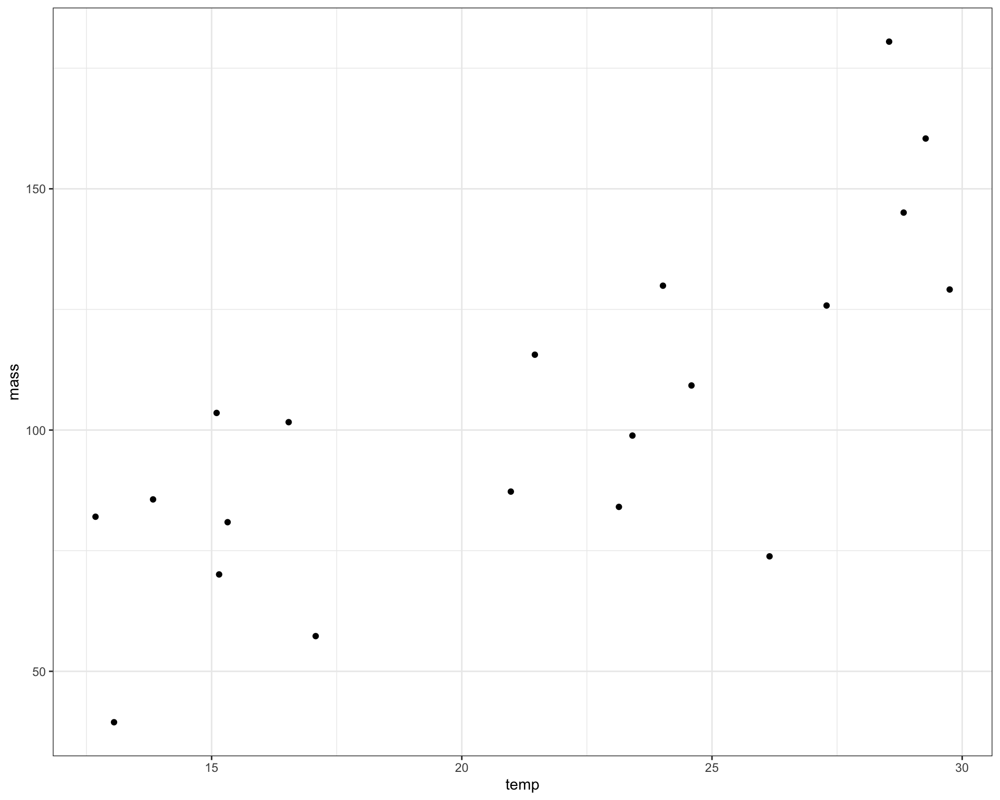
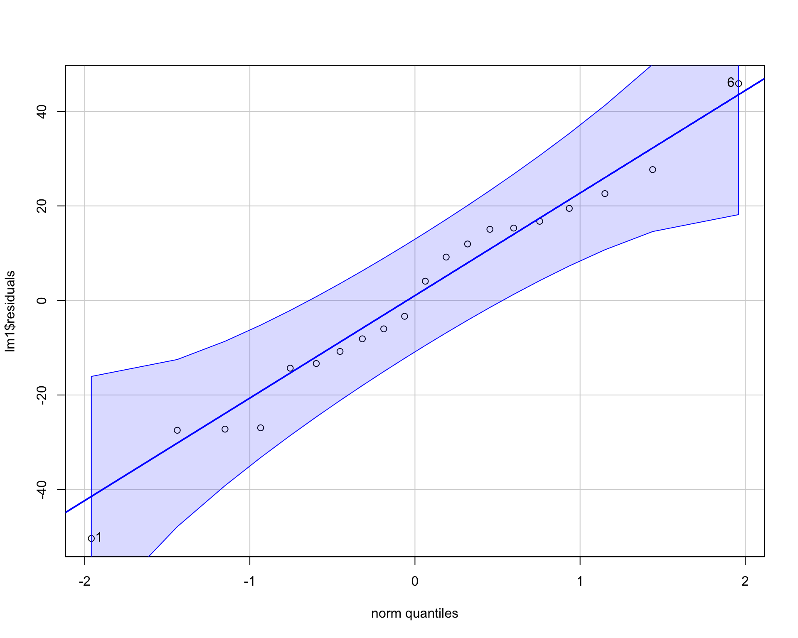
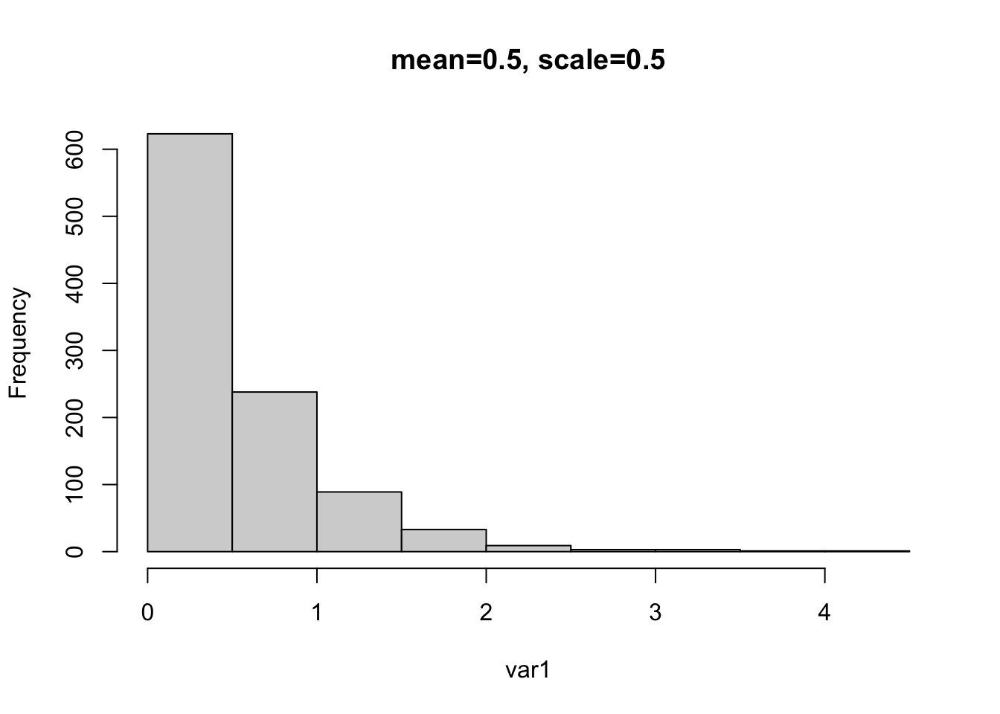

Chapter 3 Introduction to Regression
3.1 An Example of Linear Regression in R
For this section we will use the tidyverse and car package. The functon to actually run a linear regression (lm()) is built into the base R libraries
library(tidyverse)
library(car)We should also set a seed to make things reproducible. This is because for this section we will generate random numbers to create a dataset that we can use to apply a linear model to. Because we want to make sure that the same random numbers are generated for all who use this, we can do this by setting a seed. If everyone uses the same seed they will get the same random numbers that are generated from the following code:
#Set Seed
set.seed(21)# Generate random data
temp <- round(runif(20,12,30), 2)
mass <- round(rnorm(20,5*temp,25), 2)
r1 <- as.data.frame(cbind(temp,mass)) This is the random data set:
head(r1)## temp mass
## 1 26.15 73.83
## 2 16.54 101.64
## 3 24.59 109.24
## 4 15.32 80.91
## 5 29.27 160.42
## 6 28.54 180.50Temp would represent rearing temperature in celsius and mass is the mass of adults in milligrams. Let’s plot this data
ggplot(r1, aes(x=temp, y=mass))+
geom_point()+
theme_bw()
Now let’s construct a linear model to estimate the average adult mass per degree C of temperature increase. For a continuous variable (temp in celsius), we are interested in estimating the slope between mass and temperature.
We can set up the model using lm(). The varibale specified before “~” is your response (mass in this case) and the variable specified after is your predictor (temperature in this case).
lm1 <- lm(mass~temp, data=r1) # all "calculations" are saved in an object we called 'lm1'We can construct an ANOVA table of this model. The ANOVA table tests the null hypothesis that the slope is different than zero. It’s not not super useful for regressions but useful to look at.
Anova(lm1, type=2) ## Anova Table (Type II tests)
##
## Response: mass
## Sum Sq Df F value Pr(>F)
## temp 13001 1 23.137 0.0001403 ***
## Residuals 10114 18
## ---
## Signif. codes: 0 '***' 0.001 '**' 0.01 '*' 0.05 '.' 0.1 ' ' 1To see the summary of the model (e.g. model coefficients) we use summary()
summary(lm1)##
## Call:
## lm(formula = mass ~ temp, data = r1)
##
## Residuals:
## Min 1Q Median 3Q Max
## -50.349 -13.588 0.361 15.668 45.873
##
## Coefficients:
## Estimate Std. Error t value Pr(>|t|)
## (Intercept) 9.8626 20.0788 0.491 0.62922
## temp 4.3716 0.9088 4.810 0.00014 ***
## ---
## Signif. codes: 0 '***' 0.001 '**' 0.01 '*' 0.05 '.' 0.1 ' ' 1
##
## Residual standard error: 23.7 on 18 degrees of freedom
## Multiple R-squared: 0.5624, Adjusted R-squared: 0.5381
## F-statistic: 23.14 on 1 and 18 DF, p-value: 0.0001403The coefficients allow you rebuild the means from the linear model equation: \[y = \beta _0 + \beta _1X \] For continuous variables these coefficients and p-values are very useful (unlike for categorical ANOVA). Ultimately, you don’t really need to look at ANOVA table or use emmeans for this type of analysis, everything of interest is in summary.
We can also look at the model coefficients with coef() or we can actually index the coefficients by using lm1$coef.
coef(lm1)## (Intercept) temp
## 9.862553 4.371578lm1$coef ## (Intercept) temp
## 9.862553 4.371578We can make a plot with the best-fit regression line and intercept.
ggplot(r1, aes(x=temp, y=mass))+
geom_point(size=3)+
geom_smooth(method="lm")+
theme_bw()
To check assumptions of the model, we examine residuals.
We can check normality of residuals with a histogram.
hist(lm1$residuals)
We can check the homogenity of the residuals by plotting the residuals against the model’s fitted values. The residuals should be evenly dispersed around 0 across the range of x’s. Funnel shapes or curvature in the dispersion would indicate violations.
plot(lm1$residuals~lm1$fitted.values)
abline(h=0) 
Using the car package we can also make a qqplot. Residuals should line up pretty closely to the blue line and points that drift from line may be outliers.
qqPlot(lm1$residuals)
## [1] 1 6To find out which specific points are outliers we can use leveragePlots().
leveragePlots(lm1) # codes points that may be outliers
Problems with residuals indicate assumptions of the linear model are violated and may cause problems with coefficients and p-values. To alleviate potential issues transforming the data may help. It’s useful to note that assumptions can be slightly violated without causing problems.
We can also make a fancy plot of this model.
ggplot(r1, aes(x=temp,
y=mass)) +
geom_point(size=3,color='blue') +
geom_smooth(method='lm') +
labs(x = "Temperature", y = "Mass") +
theme_bw() +
theme(axis.title = element_text(face = "bold", size = 14))